List of Things I have learned
What I have learned from making this website
-
You can use VW (viewport width) and VH (viewport height) in css, I
used this for the header, the navbar, the fonts, and a ton of other
things in this website.
-
You can you the :focus selector to tell when someone has clicked
on an element, and then use it for styling elements. (I used this
for the navbar on this website)
-
You can use calc() to do arithmatic in css. For example you can do
margin-left: calc(100%-5px); I used this to create the lightbulb
effect on the logo in the header.